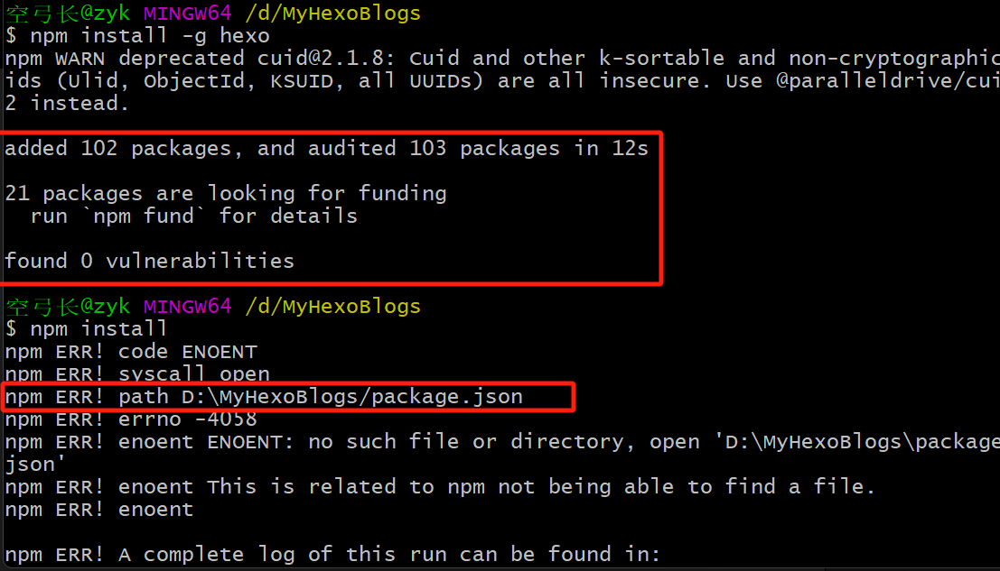
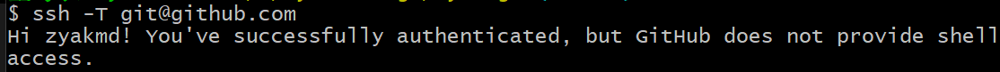
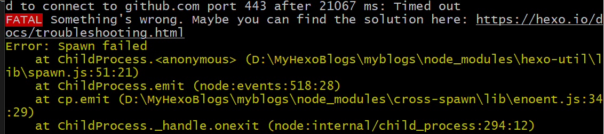

Hexo 是一个快速、简洁且高效的 博客框架。它使用 Markdown（或其他渲染引擎）解析文章，在数秒内，即可使用靓丽的主题生成静态网页
参考：
【2023 最新版】Hexo+github 搭建个人博客并绑定个人域名_hexo 部署 github 绑定自定义域名 - CSDN 博客
Hexo 系列 (一) 搭建博客网站 - 阿里云开发者社区
# npm 设置
NPM 是随同 NodeJS 一起安装的包管理工具，能解决 NodeJS 代码部署上的很多问题，常见的使用场景有以下几种：
- 允许用户从 NPM 服务器下载别人编写的第三方包到本地使用。
- 允许用户从 NPM 服务器下载并安装别人编写的命令行程序到本地使用。
- 允许用户将自己编写的包或命令行程序上传到 NPM 服务器供别人使用。
npm config set prefix "C:\Program Files\nodejs\node_global"npm config set cache "C:\Program Files\nodejs\node_cache"
设置在这↑会有权限问题，麻烦。更改到外部↓npm config set prefix "D:\nodejs\prefix"npm config set cache "D:\nodejs\cache"
# Hexo
# 安装
npm install -g hexo

在 node 开发中使用 npm init 会生成一个 pakeage.json 文件，这个文件主要是用来记录这个项目的详细信息的，它会将我们在项目开发中所要用到的包，以及项目的详细信息等记录在这个项目中。hexo init 命令可以将该文件夹初始化为 Hexo 根目录npm install 命令可以自动安装依赖列表中列出的所有模块
# 测试
输入命令 hexo s 启动本地站点
在浏览器地址栏中输入 http://localhost:4000/， 就可以看到站点在本地运行的结果了
# 部署 github
GitHub 提供了一项名为 GitHub Pages 的服务，它允许用户自定义项目首页替代默认的源码列表
因此，GitHub Pages 可以被认为是由用户编写的、托管在 GitHub 上的静态网页
而我们的目的，正是要把用 Hexo 在本地搭建的网站部署到 Github 上，使得站点可以被公共访问
有以下使用限制：
- GitHub Pages 源存储库的建议限制为 1 GB。 有关详细信息，请参阅 “关于 GitHub 上的大文件”
- 发布的 GitHub Pages 站点不得超过 1 GB。
- 如果花费的时间超过 10 分钟，GitHub Pages 部署将超时。
- GitHub Pages 站点的软带宽限制为每月 100 GB。
- GitHub Pages 站点的软限制为每小时 10 次生成。 如果使用自定义 GitHub Actions 工作流生成和发布站点，则此限制不适用
- 为了为所有 GitHub Pages 站点提供一致的服务质量，可能会实施速率限制。 这些速率限制无意干扰 GitHub Pages 的合法使用。 如果你的请求触发了速率限制，你将收到相应响应，其中包含 HTTP 状态代码
429以及信息性 HTML 正文。
1G 哪怕放不少静态图片资源都放不完，够用了，先白嫖着。
# 本地配置 个人信息
git config user.name "your-username" | |
git config user.email "your-email-address" | |
# 都有时优先用本地，但全局必须有 | |
git config --global user.name "your-username" | |
git config --global user.email "your-email-address" | |
# 查看配置 | |
# 获取默认配置，如果当前地址中仓库信息不存在，则查看全局，然后再读取系统配置 | |
git config --list | |
# 本地仓库配置 高优先级 | |
git config --local --list | |
# 全局用户配置 中优先级 | |
git config --global --list | |
# 系统配置 低优先级 | |
git config --system --list |
# 安装插件
npm install hexo-deployer-git --save
# 修改配置
根目录 下的 _config.yml 文件
属性与值之间需要留有一个空格
deploy: | |
type: git | |
repo: https://github.com/<git_name>/<repositories_name>.github.io.git | |
# 设置默认的 main，不然会推到别的仓库去，只有在默认的才能在 xx.io 看到 | |
branch: main |
# 配置 ssh
进入站点根文件夹，打开 git bash，输入 ssh-keygen -t rsa -C "your_email" 命令并一路回车获得密钥
完成后，根据提示信息中的文件地址 /c/Users/user/.ssh/id_rsa.pub 找到 id_rsa.pub 文件，复制文件里面的内容。
然后 g 在 ithub 设置中添加该 key，测试：

# 更换主题
Hexo 系列 (四) NexT 主题配置 - 阿里云开发者社区
# 编译和发布网页
Hexo 系列 (五) 撰写文章 - 阿里云开发者社区
git bash 中输入命令 hexo g 生成静态文件，输入命令 hexo d 部署到 Github
此时，打开 https://username.github.io 就可以看见已经部署好的网站了，大功告成
期间遇到了以下问题：

产生原因：一般是因为服务器的 SSL 证书没有经过第三方机构的签署，所以才报错
解决方法 1：git config --global http.sslVerify "false" 好用，但有时候需要再次设置，不应该全局设置持久化了吗？还是魔法的问题
解决方法 2： 取消 git 的代理
//取消http代理 | |
git config --global --unset http.proxy | |
//取消https代理 | |
git config --global --unset https.proxy |
# 常用命令
hexo clean #用来清理缓存文件 | |
hexo generate #生成文件 | |
hexo server #运行本地服务器 | |
hexo deploy #上传到服务器 | |
hexo new <paper_name> #新建文章 |
# 图片问题
最终方案见
在obisidian上使用
一开始用的，但问题多多↓
参考：
路径中有空格时，因为 markdown 需要 encode 空格的原因，会匹配失败・Issue #3・yiyungent/hexo-asset-img・GitHub
GitHub - yiyungent/hexo-asset-img: 🍰 Hexo local image plugin. | Hexo 本地图片插件：转换 图片相对路径 为 asset_img
安装 hexo-asset-img: npm install hexo-asset-img --save （过时了）
用最新的： npm install git://github.com/yiyungent/hexo-asset-img.git#main
在 md 文件目录下创建同名文件夹（添加该模块后 hexo g 也会自动生成）放图片。
md 中调用：
 |
注意： 图片名字和 title 不能有数字，否则会导致图像宽度变成 1，见上面 github 中的第一个 issue。
纯 html 格式，能调整大小、位置，但编译成静态资源路径有问题
<div align='center'> | |
<img src='' width=650px> | |
<p align='center' style='font-size:15px;font-family:kaiti;color:red'> </p> | |
</div> |